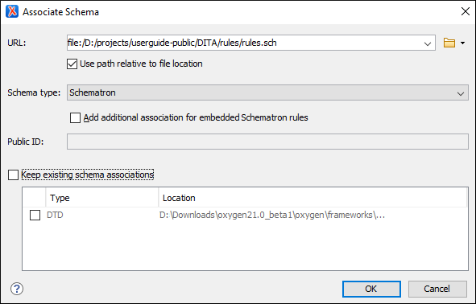

Associating a Schema Directly in XML Documents
The schema used by the Content
Completion Assistant and document validation engine can be directly
associated with the current document by using the  Associate Schema
action. For most of the schema types, it uses the xml-model processing instruction, with the exceptions of:
Associate Schema
action. For most of the schema types, it uses the xml-model processing instruction, with the exceptions of:
Associate Schema
action. For most of the schema types, it uses the xml-model processing instruction, with the exceptions of:- W3C XML Schema - The
@xsi:schemaLocationattribute or@xsi:noNamespaceSchemaLocationattribute is used. - DTD - The
DOCTYPEdeclaration is used.
The association can specify a relative file path or a URL of the schema. The advantage of relative file path is that you can configure the schema at file level instead of framework level.
To associate a schema to the current document, follow these steps:
-
Select the
Associate Schema action from the toolbar (or menu).Step Result: The Associate Schema dialog box is displayed:
Figure 1. Associate Schema Dialog Box This dialog box contains the following options:- URL - Allows you to specify or select a URL for the schema. It also keeps a history of the last used schemas. The URL must point to the schema file that can be loaded from the local disk or from a remote server through HTTP(S), FTP(S) or a custom protocol.
- Use path relative to file location - Select this option if the XML instance document and the associated schema contain relative paths. The location of the schema file is inserted in the XML instance document as a relative file path. This practice allows you, for example, to share these documents with other users without running into problems caused by multiple project locations on physical disk.
- Schema type - Select a possible schema type from this combo box that is populated based on the extension of the schema file that was entered in the URL field. The possible schema types are: XML Schema, DTD, Relax NG, Relax NG Compact, Schematron, or NVDL.
- Add additional association for embedded Schematron rules - If you have selected XML Schema or Relax NG schemas with embedded Schematron rules and you want to use those embedded rules, select this option.
- Public ID - Allows you to specify a public ID if you have selected a DTD.
- Keep existing schema associations - Select this option to use the existing schema associations of the currently edited document.
- Select the schema that will be associated with the XML document and configure the rest of the options according to your preferences.
- Click OK.
Result: The schema association is created based upon the specified type.
- XML Schema - The association with an XML Schema is added as an attribute of the
root element with one of the following:
@xsi:schemaLocationattribute, if the root element of the document is in the namespace.@xsi:noNamespaceSchemaLocationattribute, if the root element is not in the namespace.
- DTD - The association with a DTD is added as a
DOCTYPEdeclaration. - Other - The association with a Relax NG, Schematron, or NVDL schema is added as an xml-model processing instruction.
Tip: To quickly open the schema used for validating the
current document, select the  Open Associated Schema action from the toolbar (or
menu).
Open Associated Schema action from the toolbar (or
menu).
Open Associated Schema action from the toolbar (or
menu).